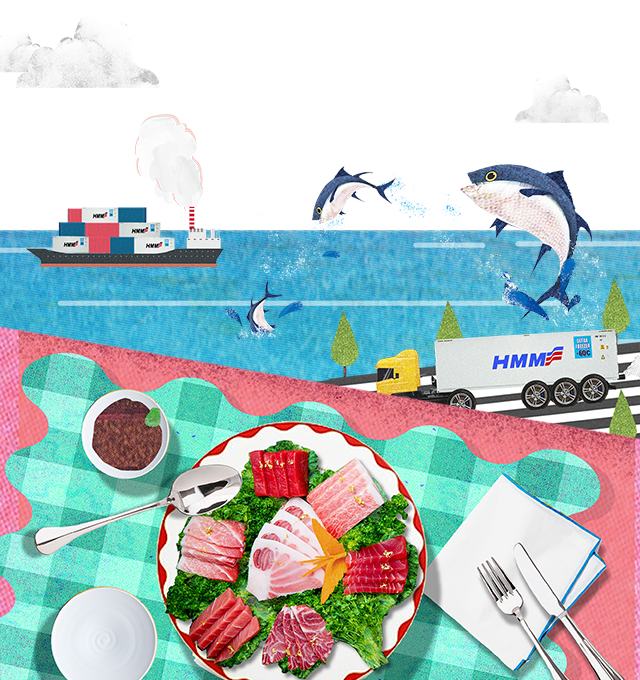
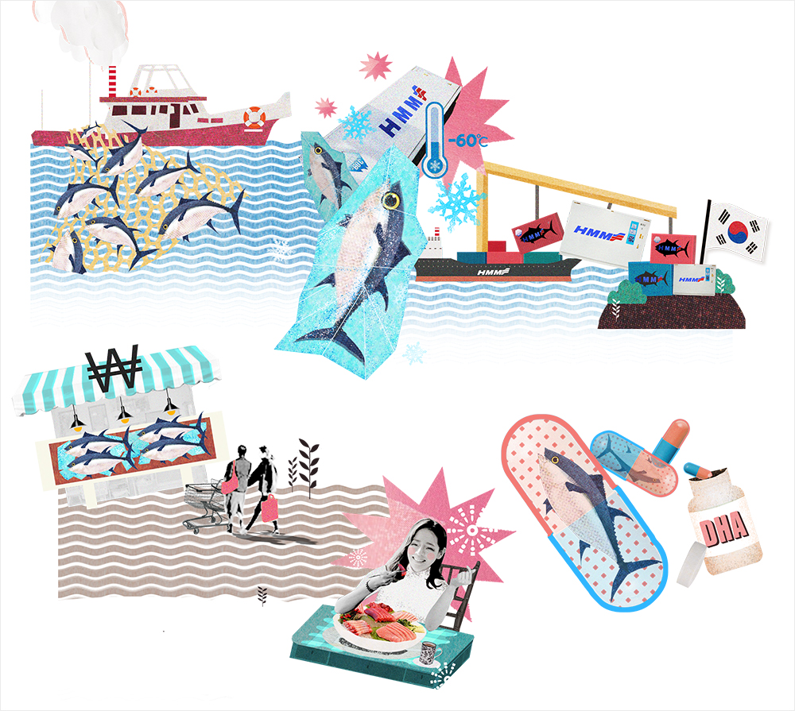

와 제 롤모델이 잡스에요!!! 아이폰 첫 출시되고 나서부터 계속 아이폰 쓰고 있는데 잡스가 너무 그리워요ㅠㅠ 지금은 돈만 벌려고 하는 것 같아서 디자인 발전도 없고ㅠㅠ와 제 롤모델이 잡스에요!!! 아이폰 첫 출시되고 나서부터 계속 아이폰 쓰고 있는데 잡스가 너무 그리워요ㅠㅠ 지금은 돈만 벌려고 하는 것 같아서 디자인 발전도 없고ㅠㅠ와 제 롤모델이 잡스에요!!! 아이폰 첫 출시되고 나서부터 계속 아이폰 쓰고 있는데 잡스가 너무 그리워요ㅠㅠ 지금은 돈만 벌려고 하는 것 같아서 디자인 발전도 없고ㅠㅠ와 제 롤모델이 잡스에요!!! 아이폰 첫 출시되고 나서부터 계속 아이폰 쓰고 있는데 잡스가 너무 그리워요ㅠㅠ 지금은 돈만 벌려고 하는 것 같아서 디자인 발전도 없고ㅠㅠ와 제 롤모델이 잡스에요!!! 아이폰 첫 출시되고 나서부터 계속 아이폰 쓰고 있는데 잡스가 너무 그리워요ㅠㅠ 지금은 돈만 벌려고 하는 것 같아서 디자인 발전도 없고ㅠㅠ
HMM Today
Tuna on
Our Dining Table
A Cargo’s Untold Story
Tuna on Our
Dining Table
A Cargo’s Untold Story

Editor
How has tuna been brought to our dining table where we can enjoy it as canned food or raw fish? Until the 1970s, the demand for tuna was very low except in Japan. Global distribution with the development of transportation revolution, including containers, and of low temperature freezing technology capable of quick-freezing, has opened the way for the rise in demand for tuna. We introduce the interesting story about tuna which is leading the growth of the logistics market by raising the appetite of people around the world.
There was a time even when tuna was discarded?
Can you believe that there was a time when high-quality tuna was thrown away in the garbage dump? In fact, until the 1970s, tuna was a nuisance, not welcomed by fishermen except in Japan. Tuna, which was dumped or often used as cat food, began to be loved by the Japanese in the 1960s. The demand for tuna, which had been neglected by the Japanese until the 1950s due to its oily characteristics, began to surge as their economy developed. However, due to the limitations of logistics and freezing technology, tuna had to be treated as special food which only a certain class of people could enjoy.
Popularization of tuna led by a change
from air transportation to ocean transportation
In the early days when tuna started to be transported from North America to Japan, there were a lot of complications. At that time, there was a low temperature technology to freeze up to - 50°C but there was a limit to freezing the internal parts of big tuna. Package transportation technology, such as removing its internal organs, was also insufficient. After a few trials and errors, tuna began to be sold in the Japanese seafood market. As the demand for tuna gradually expanded in the 2000s, tuna logistics and distribution personnel chose ocean transportation instead of air transportation in order to transport expensive tuna in an economical way. This caused big changes in tuna logistics. People around the world were able to eat inexpensive and safe tuna due to the popularization of containers and development of reefer containers. Through ocean transport, tuna has become more popular in Europe, the United States, as well as in Japan.


The vital role of the ultra freezer
An ultra-low temperature reefer container called an ultra freezer has played a vital role that led to changes in logistics and popularization of tuna. An ultra freezer can be set to an ultra-low temperature up to - 60°C, playing a vital role where vessels can transport tuna (or cargo that needs cryogenic transportation) around the world. With an ultra freezer, it has become possible to maintain the quality of tuna through ocean transport over a long time. This service requires a high level of technical skill and highly skilled personnel to maintain ultra-low temperature conditions during transport, as well as the loading and unloading process. For this reason, its freight rate is 8 to 10 times higher than that of regular reefer containers, and thus recognized as a high value-added business. In addition, an ultra freezer has an average cargo value of about $500,000 to $600,000 per container while a regular reefer container has a value of $10,000 to $20,000 per container. In other words, it carries about 30 to 40 times higher value-added cargo than a regular reefer container.
The ultra freezer market has been operating as an oligopoly of some shipping and logistics companies, including Maersk, CMA, and Coldwave, until recently due to difficulties in new market entry and securing cargo. Meanwhile, HMM has diversified its efforts to develop new tuna markets, including securing ultra freezer equipment. This year, HMM has successfully entered this high-value-added ultra freezer market, beginning transportation from Busan to Barcelona, Spain. In addition, HMM has been gradually expanding its influence in the market by securing additional 25 new equipment.
With the development of logistics, tuna has also evolved into a variety of products. Tuna, which we have enjoyed as canned food or raw fish at our dining table, has now evolved into as a variety of by-products, including medicines, cosmetics, and health supplements. It's worth watching that which logistics market tuna that has captured the taste of people around the world via logistics will lead in the future.
-
Great
322
-
Like
322
-
Sad
322
-
So-so
322
-
Angry
322